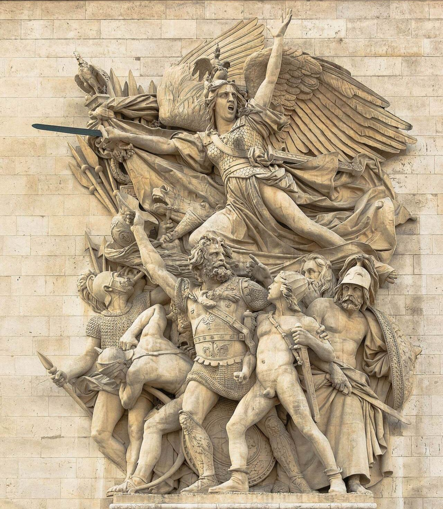
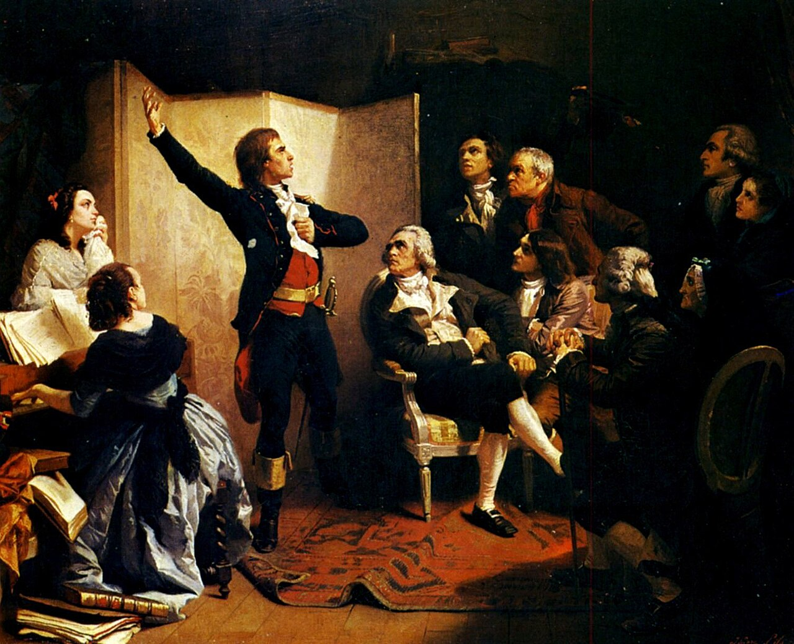
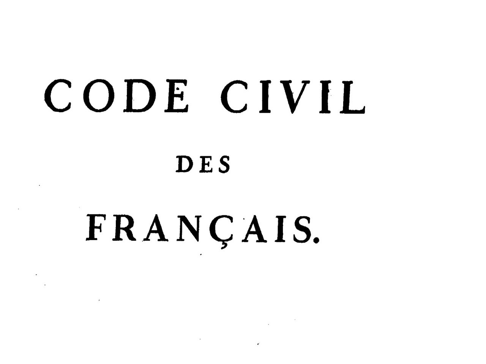
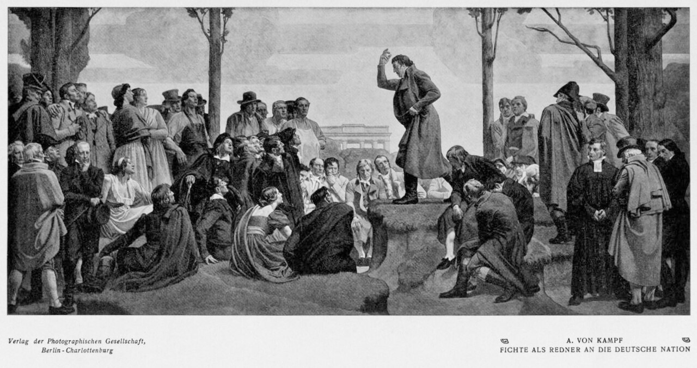
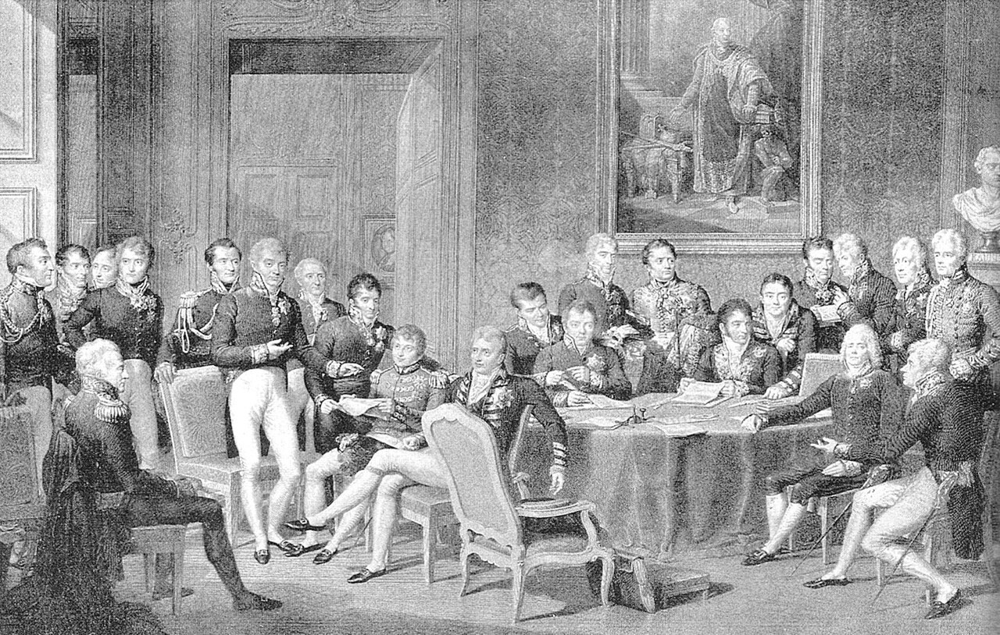
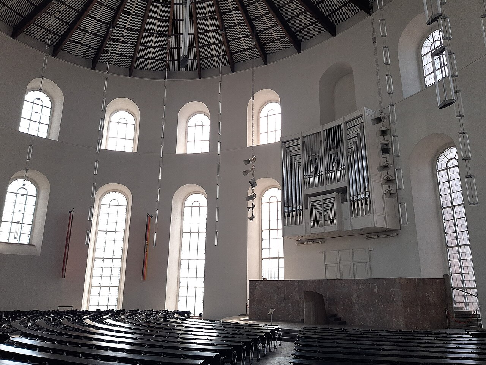

歴史・地理 History & Geography国のために 戦う 「国民」は、 いつ 生まれた？ 200年あまり前まで、ヨーロッパの戦争は王の職業軍人が戦うもので、ふつうの人は自分が「何人か」をあまり気にしていませんでした。フランス革命の国民総動員から、ナポレオンの征服とそれへの反発、イタリアとドイツの統一まで。地図と年表で、「国民」が生まれ、作られていく道すじをたどってみませんか。
2026.11.16 UP 約8分で読める 文：SOMOSOMO編集部
写真：凱旋門の「1792年の義勇兵の出発」（リュード作、1833〜36年）／Jebulon（2013年、CC0）
Previously
前回は、王さまのいない国が生まれた話でした。1776年、アメリカが独立を宣言します。1789年にはフランス革命が始まり、人権宣言が出されました。1793年に国王ルイ16世が処刑され、1799年、将軍ナポレオンが権力をにぎります。
フランス北東部の村ヴァルミー、1792年9月20日。パリをめざして進んできたプロイセン（いまのドイツ北部を中心にした王国）の軍の前に、フランスの軍が立ちはだかりました。指揮官ケレルマンが帽子をかかげて「ヴィヴ・ラ・ナシオン（国民万歳）」と叫ぶと、兵たちは声を合わせ、歌いだしました。
その日、プロイセン軍は攻めるのをやめ、引き下がります。プロイセンの陣にいたドイツの詩人ゲーテは、のちに、ここから世界の歴史の新しい時代が始まったと書き残しました。叫ばれたのは、王の名ではなく、「国民」でした。
いま私たちは、スポーツの国際大会で自分の国を応援し、国歌が流れれば背すじをのばします。けれども、ふつうの人が「国のために戦う国民」になったのは、そう古いことではありません。国のために戦う「国民」は、いつ生まれたのでしょうか 。
In a word
フランス革命の戦争 で生まれ、ナポレオンへの反発 で各地に広がった。
01
A Nation in Arms
王の戦争が、 国民の戦争に 変わった
それまでのヨーロッパの戦争は、王や君主どうしの争いでした。18世紀のおもな戦争で戦ったのは、ふだんから王に仕える職業軍人です。住民の多くは、戦いに加わりませんでした。軍の中には、生まれた国とは別の王に仕える将校もめずらしくありませんでした。
1789年に革命が始まると、まわりの王たちは、革命が自分の国に飛び火することをおそれます。1792年4月、フランスはオーストリアに宣戦しました。
その月の25日、ライン川に近い町ストラスブールの市長が、客として来ていた軍人ルージェ・ド・リールに、兵を励ます歌を頼みます。その夜にできたのが「ライン軍のための軍歌」でした。歌がささげられた元帥ルックナーも、バイエルン（ドイツ南部）に生まれ、オランダやハノーファーの軍をへてフランス軍に仕えた人です。
歌はまもなく、マルセイユから来た義勇兵（自分から兵に志願した人）がパリで歌い広め、「ラ・マルセイエーズ」と呼ばれるようになります。ヴァルミーで兵たちが声を合わせたのも、この歌でした。1795年には、フランスの国歌に定められました。

初めて歌われた「ラ・マルセイエーズ」 ストラスブールの市長の家で、ルージェ・ド・リールが初めてこの歌を歌う場面を、57年後の1849年にピルスが想像して描いた絵です。左寄りで片手を高く上げているのがルージェ・ド・リール。王のためでなく、祖国を守るための歌でした。写真：Pils - Rouget de Lisle chantant la Marseillaise ／イジドール・ピルス（1849年、パブリックドメイン）
1793年、フランスはオーストリア、プロイセン、スペイン、イギリスなどを相手に戦っていました。8月23日、議会（国民公会）は国民総動員令を出します。18〜25歳の独身の健康な男性は、その日から兵として集められました。
命令は、兵になる若者だけでなく、国じゅうの人に役目を割りふりました（Fig.01）。敵を追い出すまで、フランス人はみな軍のために働く、という宣言です。国民が総出で国を守る形が、ここではっきりと示されました。
Fig.01 王の戦争と、 国民総動員令の 役割分担
王の戦争（18世紀）
戦うのは、王に仕える職業軍人
住民の多くは、戦いに加わらない
1793年8月23日
国民の戦争（国民総動員令）
若い男性
結婚した男性
女性
子ども
老人
戦場で戦う
武器をつくり、食料を運ぶ
テントや服をつくり、病院で働く
古い布をほぐし、傷の手当てに
広場で兵を励まし、団結を説く
見どころは、命令が兵になる若者（赤）だけでなく、女性・子ども・老人にまで役目を割りふっていること。役割は1793年8月23日の命令の文から、短くまとめました。
もっとも、兵がみな燃える市民だったわけではありません。ヴァルミーでも、フランス軍の少なくとも半分は昔からの職業軍人で、性能のよい大砲もものを言いました。それでも人々の記憶には、歌いながら戦う市民の兵の姿が残りました。
02
Conquest and Backlash
ナポレオンの征服が、 征服された側の 「国民」を 目覚めさせた
1799年に権力をにぎったナポレオンは、1804年3月21日、民法典を定めます。土地や身分ごとにばらばらだった古い決まりを、だれにでも読める1つの法にまとめたものです。生まれた身分によらず、国じゅうの人が同じ法に従う──「国民」を法の上でも1つにするしくみでした。同じ年、彼は皇帝になりました。

『フランス人の民法典』の扉 1804年に刷られた民法典です。正式な名は題のとおり「フランス人の民法典」で、のちに「ナポレオン法典」と呼ばれるようになります。写真：Code civil des Français, 1804 ／ポルタリスほか（1804年、パブリックドメイン）
ナポレオンの軍は勝ち続け、法典は従えた土地にも持ちこまれました。イタリアでは、フランスの支配が古い領主のしくみを壊し、のちの統一運動の土台になったとされます。
1806年8月、ドイツの小さな国々をゆるく束ねてきた神聖ローマ帝国は、ナポレオンに押されて終わりを迎えます。10月14日には、イエナなどの戦いでプロイセン軍が大敗し、フランス軍がベルリンに入りました。
占領されたベルリンで、1807年の冬から翌年にかけ、哲学者フィヒテは連続の講演「ドイツ国民に告ぐ」を行います。ドイツの人々を1つに結ぶのは、ドイツ語という言葉と、伝統と文学だ、という呼びかけでした。

話すフィヒテ 1915年に画家カンプが描いた想像の絵で、中央の台の上で話しているのがフィヒテです。実際の講演は、ベルリンのプロイセン学士院の円い広間で行われました。写真：Arthur Kampf 1915 Fichte als Redner Berlin Universität ／アルトゥール・カンプ（1915年、パブリックドメイン）
スペインでは1808年、ナポレオンの軍が国に入りこみます。5月2日、マドリードの市民が立ち上がりました。ナポレオンはスペインの王を退かせ、兄ジョゼフを王にすえます。
各地で待ちぶせや襲撃をくり返す「ゲリラ（小さな戦争）」が広がり、フランスの大軍は長く足止めされます。
同じころ、グリム兄弟は、人々が語り伝えてきた昔話を集め、1812年に最初の巻を出しました。のちのグリム童話です。古いドイツの文学の歴史を残そうとした仕事です。その国の昔話こそ国らしさを表す、という考えは、ほかの国にも広がりました。
1812年、ナポレオンはロシアに攻めこみます。68万5,000人の大軍の3分の1以上は、従わせた国々から集めたフランス人以外の兵でした。征服者の軍のほうが、多くの国の寄せ集めだったのです。生きて戻れたのは9万3,000人です。
翌1813年10月、プロイセン・オーストリア・ロシアなどの軍が、ライプツィヒでナポレオンを破りました。この戦いは、のちに「諸国民の戦い」と呼ばれます。
Fig.02 「国民」を めぐるおもな舞台 （1792〜1871年）
地中海
大西洋
北海
フランス
スペイン
ベルギー
ドイツ
ヴァルミー
イエナ
マドリード
ライプツィヒ
ワーテルロー
トリノ
ヴェルサイユ
ベルリン
ウィーン
フランクフルト
ローマ
ストラスブール
テアーノ
本文に出る戦いの場所
新しい国が宣言された場所
そのほかの話に出る場所
見どころは、本文に出る戦いの場所（赤い点）が、フランスからベルギー、ドイツ、スペインまで広がっていること。新しい国の宣言は、イタリアはトリノ、ドイツはフランスのヴェルサイユで行われました。地図は Natural Earth（パブリックドメイン）から作りました。町の位置はおおよそです。
03
The Clock Turned Back
王たちは 時計を戻したが、 「国民」の夢は 消えなかった
1814年9月から翌年6月まで、オーストリアの都ウィーンに各国の代表が集まりました（ウィーン会議）。まとめ役はオーストリアの政治家メッテルニヒです。目ざしたのは、王たちの秩序を取り戻し、大国の力のつり合いを保つことでした。フランスにも、処刑されたルイ16世の弟が王として戻りました。

ウィーン会議 画家イザベイの絵をもとにした、1819年の版画です。テーブルを囲むのは各国の代表たち。ここで決まったのは、民族ごとの国ではなく、王たちの国の境目でした。写真：Wiener Kongress ／ジャン＝バティスト・イザベイ（原画）、ジャン・ゴドフロワ（版画）（1819年、パブリックドメイン）
ナポレオンは1814年にいったん皇帝の位を退き、地中海のエルバ島に送られました。翌1815年3月にパリへ戻りますが、ウィーンでの取り決めが6月9日に結ばれた9日後、いまのベルギーのワーテルローで、イギリスとプロイセンなどの軍に敗れます。
ドイツは、オーストリアを議長とする国々のゆるい連合（ドイツ連邦）にまとめ直されましたが、1つの国にはなりませんでした。
「同じ言葉の人々は1つの国に」という考えは、王たちには危ないものでした。オーストリアは、ドイツ語を話す人々のほか、ハンガリー人やチェコ人、イタリア人など、多くの民族をかかえる国だったからです。
1848年、不満は一気に吹き出します。2月にパリで革命が起き、ふたたび王政が倒れると、革命はウィーンやベルリンなど各地に広がり、のちに「諸国民の春」と呼ばれました。ウィーンでは3月、メッテルニヒが職を追われます。
5月18日には、ドイツの各地から選ばれた議員が、フランクフルトのパウロ教会に集まりました。ドイツの国々すべてから自由な選挙で選ばれた、初めての議会です。議会は統一ドイツの憲法を作り、翌年、プロイセン王に「ドイツ人の皇帝」の位を差し出しました。
けれども王は、諸侯（各地の君主）の権利をそこなうとして断ります。大きな国々も憲法を受け入れず、国民の代表が下から国をまとめる夢は、ここで破れました。

フランクフルトのパウロ教会 1848年に国民議会が開かれた建物の、いまの広間です。円い形の広間に、窓が2段に並びます。写真：Paulskirche, Frankfurt, hall ／Gerda Arendt（2025年、CC0）
04
Unity from Above
統一を なしとげたのは、 議会ではなく 王と戦争だった
イタリアで統一の中心になったのは、北西部のトリノを都とするサルデーニャ王国でした。首相カヴールが外交で領土を広げ、1860年5月には、軍人ガリバルディが約1,000人の義勇兵を率いて、南のシチリア島に上陸します。
南を手に入れたガリバルディは、10月26日、テアーノで王ヴィットーリオ・エマヌエーレ2世を「イタリアの王」と呼んで迎えました。1861年3月17日、トリノの議会がイタリア王国を宣言します。ローマが加わるのは1870年のことでした。
ドイツでは、プロイセンの首相ビスマルクが、戦争を重ねて統一を進めました。1866年にオーストリアを破り、オーストリア抜きの北ドイツ連邦を作ります。1870年には、フランスとの戦争が始まりました。
1871年1月18日、プロイセンなどの軍がパリを囲むさなか、プロイセン王ヴィルヘルム1世は、ヴェルサイユ宮殿の鏡の間でドイツ皇帝となることを宣言されました。その天井には、ドイツの町々を打ち負かした王として、17世紀のフランスの王ルイ14世が描かれていました。
2つの統一の場面 左は、テアーノで出会うガリバルディ（黒い馬）と王（白い馬）を、1886年にアルディが描いた壁画です。右は、鏡の間での皇帝の宣言を、その場にいた画家ヴェルナーが1885年に描き直した絵。壇の上に立つのが皇帝、中央の白い軍服がビスマルクです。どちらの場面にも、選挙で選ばれた議員の姿はありません。写真：左 Victor Emanuel II Meeting Giuseppe Garibaldi at Teano ／ピエトロ・アルディ（1886年、パブリックドメイン）、右 Kaiserproklamation am 18 Januar 1871 (3. Fassung 1885) ／アントン・フォン・ヴェルナー（1885年、パブリックドメイン）
Fig.03 「国民」が 国を作るまで （1789〜1871年）
1789 フランス革命が始まる1792 ヴァルミーの戦い1793 国民総動員令1804 民法典、ナポレオンが皇帝に1806 神聖ローマ帝国が終わる1807 フィヒテ「ドイツ国民に告ぐ」1808 スペインの抵抗1813 ライプツィヒの戦い1815 ウィーン会議、ワーテルロー1848 諸国民の春、国民議会1861 イタリア王国の宣言
1871 ドイツ帝国の宣言
新しい国の宣言
戦い・会議・思想などのできごと
見どころは、1848年に議会が国をまとめそこねてから、新しい国の宣言（赤い点）まで、さらに10〜20年あまりかかったこと。点の間隔は年数に比例していません。
こうしてみると、「国民」はある日いっせいに生まれたのではありません。革命のフランスで、国民が総出で戦う形が生まれました。ナポレオンの征服は、その形と、それへの反発を、ヨーロッパじゅうに運びました。19世紀の半ばには、その力を使って、王と政治家が戦争で新しい国を作りました。
国のために戦う「国民」は、1790年代のフランスで生まれ、ナポレオンと戦う中でヨーロッパに広がっていきました 。ただ、広がったのはまず考えと旗印で、人々がみな「国民」になるには、もっと時間がかかりました。
05
By the Numbers
数字で見る 国民の誕生
約 80万人 1794年、国民総動員のあと、実際に戦える状態にあったフランス軍の兵は、多くて約80万人と推計される。ヴァルミーで戦った1つの軍（ケレルマンの軍、約3万6,000人）の20倍を超えるLevée en masse・Battle of Valmy（Wikipedia）による。倍率は編集部の計算
39か国 1815年にできたドイツ連邦に加わった国の数（4つの自由都市をふくむ）。神聖ローマ帝国の約300の国をまとめ直したが、1つの国にはならなかったCongress of Vienna（Wikipedia）による
222年 1804年の民法典が、改正を重ねながらフランスで使われ続けている年数（2026年まで）。国民を同じ法で治める形は、いまも生きているNapoleonic Code（Wikipedia）による。年数は編集部の計算
Here's the Fun Part
ここが面白い！イタリア王国が できたとき、 イタリア語を 話せた人は わずかだった
1861年にイタリア王国が生まれたとき、人々がふだん話していたのは、地方ごとに大きくちがう言葉でした。いまの標準のイタリア語は、フィレンツェのあるトスカーナ地方の書き言葉がもとです。
イタリアの言語学者デ・マウロの推計では、1861年に標準のイタリア語をきちんと話せた人は、人口のわずか2.5% でした。10%とみる学者もいますが、どちらにしても少数です。読み書きのできる人も、このころは4人に1人ほどでした。
統一運動の政治家ダゼッリオの回想録には、イタリアはできた、これからイタリア人をつくらなければならない、という意味の一文があります。国が先にできて、「国民」はそのあとで育てられていったのです。
国民とは、会ったこともない人々を同じ仲間と思いえがくことで成り立つ「想像の共同体」だ、という見方もあります（政治学者アンダーソン、1983年）。次にスポーツの大会で国歌が流れたら、ヴァルミーの「国民万歳」から始まった、この200年あまりの積み重ねを思い出してみてください。
To be continued
ナポレオンと最後まで戦い続けた国の1つが、海の向こうのイギリスでした。そのイギリスでは、ナポレオンが生まれる前から、機械で糸をつむぎ、石炭で動く蒸気機関を使う大きな変化が始まっていました。のちに産業革命と呼ばれる変化です。産業革命は、なぜイギリスで起きたのでしょうか。